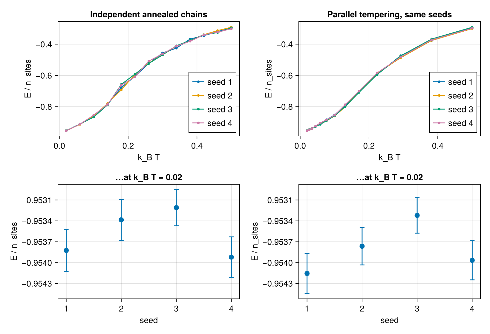
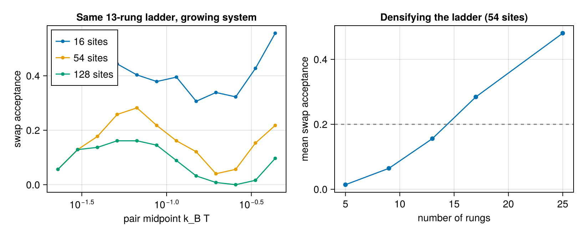

Parallel tempering
run_pt runs one chain (lane) per rung of a strictly monotone temperature ladder, all sweeping concurrently over threads (start Julia with -t N). Every exchange_interval sweeps, adjacent rungs attempt to swap their configurations with probability min(1, exp((βᵢ−βⱼ)(Eᵢ−Eⱼ))) — so a low-temperature rung keeps escaping metastable basins by round-tripping through the hot end. This is the tool for the broken-ergodicity failure mode where independent chains freeze into different basins while each reports small, confident error bars.
pt = run_pt(H; temperature = range(250, 1300; length = 16),
exchange_interval = 10, seed = 1)
pt.points[1] # coldest rung's TempResult (points follow ladder order)
pt.swap_acceptance # length nrungs−1, the ladder diagnosticA StrainSchedule plus the pressure keywords (as in run_mc) makes every lane an NPT chain at the same pressure: each lane sweeps its own coefficient clone of H, the strain travels with the swapped payload, and the swap weight becomes E + n_cells·j0(s) + P·V(s) — see the running guide's NPT section.
Choosing the ladder — the size scaling matters
A swap accepts when (βᵢ−βⱼ)(Eᵢ−Eⱼ) = O(1). Since E is extensive and adjacent energies differ by ≈ C·ΔT per site, the acceptance scales like exp(−n_sites · C · (ΔT/T)²) — the rung count must grow like √(n_sites · C) for a fixed temperature span. A ladder that works on the training cell can be uselessly sparse on a 4×4×4 supercell: in the Nd₂Fe₁₄B smoke test (4352 sites), 8 rungs over 250–1300 K produced zero accepted swaps — correct physics, not a bug. Watch swap_acceptance, aim for O(0.2–0.5) per pair, and tighten the ladder (geometric spacing is a good start) where it collapses — typically around the specific-heat peak.
exchange_interval sets the sweeps between attempts; ~10 is a reasonable default (frequent enough to profit, cheap against the sweep cost).
Seeing it: a rough energy landscape
Both figures below are computed when the documentation is built. The workhorse is a deliberately nasty model — random anisotropic couplings up to $l = 2$ (through the same fitted-model surface as production runs), whose low-temperature landscape has several competing basins:
using SLCEMonteCarlo, SLCE
using LinearAlgebra, Random
lat = Lattice(Matrix(3.0 * I(3)))
cell = Crystal(lat, [0.2 -0.2; 0.0 0.0; 0.0 0.0], [1, 1], ["Fe"])
basis = SLCEBasis(cell, BasisSpec(; nbody = 2, cutoff = 1.5, lmax = [2],
soc = true))
model = SLCEModel(basis, 0.0, 0.05 .* randn(MersenneTwister(3), n_salcs(basis)))
H = TiledHamiltonian(model; dims = (2, 2, 2))Frozen chains vs replica exchange
Four independent annealing runs (run_mc, high → low) against four run_pt runs with a 13-rung geometric ladder over the same span, same seeds. Below $k_BT \approx 0.15$ the plain chains freeze: they disagree far beyond their (small, confident) error bars — the textbook broken-ergodicity trap. The PT replicas keep round-tripping through the hot end and land in the same state:
kts = collect(range(0.5, 0.02; length = 13)) # annealing grid (descending)
ladder = 0.02 .* (0.5 / 0.02) .^ range(0, 1; length = 13) # geometric (ascending)
seeds = 1:4
mc = [run_mc(H; kT = kts, sweeps_therm = 2000, sweeps_measure = 4000,
seed = UInt64(s)) for s in seeds]
pt = [run_pt(H; kT = collect(ladder), sweeps_therm = 2000, sweeps_measure = 4000,
exchange_interval = 10, seed = UInt64(s)) for s in seeds]using CairoMakie
CairoMakie.activate!(type = "png")
curve(r) = ([p.kT for p in r.points],
[p.stats[:energy].mean[1] / n_sites(H) for p in r.points],
[p.stats[:energy].err[1] / n_sites(H) for p in r.points])
coldest(r) = (r.points[argmin([p.kT for p in r.points])].stats[:energy].mean[1],
r.points[argmin([p.kT for p in r.points])].stats[:energy].err[1]) ./
n_sites(H)
fig = Figure(size = (820, 560))
ax1 = Axis(fig[1, 1]; xlabel = "k_B T", ylabel = "E / n_sites",
title = "Independent annealed chains")
ax2 = Axis(fig[1, 2]; xlabel = "k_B T", ylabel = "E / n_sites",
title = "Parallel tempering, same seeds")
for (s, r) in zip(seeds, mc)
x, e, ee = curve(r)
scatterlines!(ax1, x, e; label = "seed $s", markersize = 6)
errorbars!(ax1, x, e, ee)
end
for (s, r) in zip(seeds, pt)
x, e, ee = curve(r)
scatterlines!(ax2, x, e; label = "seed $s", markersize = 6)
errorbars!(ax2, x, e, ee)
end
linkaxes!(ax1, ax2)
axislegend(ax1; position = :rb)
axislegend(ax2; position = :rb)
# the smoking gun: the coldest point, seed by seed, with its error bar
ax3 = Axis(fig[2, 1]; xlabel = "seed", ylabel = "E / n_sites",
xticks = collect(seeds), title = "…at k_B T = 0.02")
ax4 = Axis(fig[2, 2]; xlabel = "seed", ylabel = "E / n_sites",
xticks = collect(seeds), title = "…at k_B T = 0.02")
for (ax, rs) in ((ax3, mc), (ax4, pt))
e = [coldest(r)[1] for r in rs]
ee = [coldest(r)[2] for r in rs]
scatter!(ax, collect(seeds), e; markersize = 12)
errorbars!(ax, collect(seeds), e, ee; whiskerwidth = 8)
end
linkaxes!(ax3, ax4)
fig
The bottom row is the trap in one glance: one annealed chain sits a full $0.03\,|E|/\mathrm{site}$ above the others — a hundred times its own error bar — because a stuck chain samples its basin very precisely. Nothing in that single run flags the failure; only seed-to-seed disagreement (or PT, right, where every seed lands in the same state) exposes it. This is spec docs/specs/updates-stationarity.md (U6) in picture form.
The ladder diagnostic in picture form
swap_acceptance is the health check. Left: the same 13-rung ladder applied to growing supercells of the same model — acceptance collapses as $\exp(-\mathrm{const} \cdot n_\mathrm{sites})$ per pair, the reason a training-cell ladder is uselessly sparse on a production supercell. Right: at fixed size, densifying the ladder restores it (the √(n_sites·C) rule):
fig = Figure(size = (820, 330))
ax1 = Axis(fig[1, 1]; xlabel = "pair midpoint k_B T", ylabel = "swap acceptance",
xscale = log10, title = "Same 13-rung ladder, growing system")
for L in (2, 3, 4)
HL = TiledHamiltonian(model; dims = (L, L, L))
p = run_pt(HL; kT = collect(ladder), sweeps_therm = 500, sweeps_measure = 2000,
exchange_interval = 10, seed = 7)
mid = sqrt.(ladder[1:(end - 1)] .* ladder[2:end])
scatterlines!(ax1, mid, p.swap_acceptance;
label = "$(n_sites(HL)) sites", markersize = 7)
end
ax2 = Axis(fig[1, 2]; xlabel = "number of rungs", ylabel = "mean swap acceptance",
title = "Densifying the ladder (54 sites)")
H3 = TiledHamiltonian(model; dims = (3, 3, 3))
rungs = (5, 9, 13, 17, 25)
acc = map(rungs) do R
lad = 0.02 .* (0.5 / 0.02) .^ range(0, 1; length = R)
p = run_pt(H3; kT = collect(lad), sweeps_therm = 500, sweeps_measure = 2000,
exchange_interval = 10, seed = 7)
sum(p.swap_acceptance) / (R - 1)
end
scatterlines!(ax2, collect(rungs), collect(acc); markersize = 9)
hlines!(ax2, [0.2]; linestyle = :dash, color = :gray)
axislegend(ax1; position = :lt)
fig
Aim above the dashed 0.2 line for every pair, not just on average — one dead pair cuts the ladder in two.
Semantics worth knowing
- Lane = fixed temperature. Exchanges swap the chain payload (configuration + energy); RNG, adapted step, and accumulators stay with the lane, so
points[r]is directly the equilibrium physics atkts[r]. - Exchanges run during thermalization and measurement alike.
- Step adaptation is per-lane and thermalization-only, as in
run_mc. - Determinism: results are bit-identical for a fixed seed regardless of
ntasksand the thread count — every random decision has a dedicated RNG whose consumption order is fixed by the segment schedule (docs/specs/pt-threads-determinism.md). initseeds every lane (default: independent random starts).- Lanes share memory: one ladder is bounded by one node — implementation, limits, and multi-node recipes in parallelism.
final_configsfeed straight into the ground-state polish recipe — see ground states.